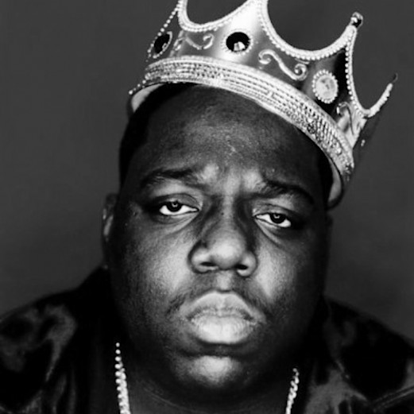

Spandex are life. My life is fitness, travel, and freelance development. Here is my life on paper. I've worked in the health and fitness business for the past few years and recently have picked up web development. Blah Blah work.
Download Resumea picture will go here

My side hustle is freelancing websites. I build every website from scratch using Jekyll to pull it all together. Building websites is kind of like having a child (I can imagine)...it can be a long, painful process with moments of happiness and when it pops out it's head may be in the shape of a cone. Websites are similar, always a work in progress.
Here is what I am currently working on. Some are final products. Some are still on the way to being beautiful.
Do you know of a non-profit that needs a website? Since I am usually bouncing from place to place I volunteer my time by building sites for non-profit organizations. Currently working on Ageless Aviation Dreams Foundation. Will have a space available this fall. Email me with inquires. Contact Me
Continuously learning is something so important to me. No matter what role I'm in I like to stretch my mind, expand my horizons, and put my free time to good use.